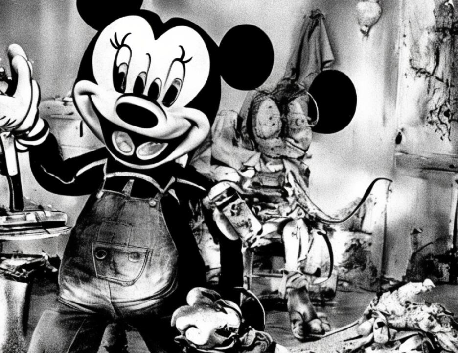

25 something we don't all understand.
REPORTERS CENTRAL
(212) 594-3582
8606
1 1721BIN2
SUMMATION - Mr. Fitzgerald
2 It's something none of the people
3 around him understood. When you heard from his
4 family, they never would have thought he would
5 have engaged in violence. When you heard from
6 the imam in South Africa, he never thought that
7 Khalfan would engage in violence. When you
8 heard from the Dalvies, they thought he
9 wouldn't hurt an ant. That's because Khalfan
10 has a side to him, a cold-blooded killing side
11 that he kills, remorseless, by choice, and
12 doesn't show it to people. That's not a
13 cultural thing. That's an evil character trait
14 of the defendant. That's what killed those
15 people on August 7th. That's what happened on
16 November 1st, 2000.
17 And let's not try to hide behind
18 culture or religion. Many, many people grew up
19 in Tanzania with a lot less. Many people grew
20 up in America with a lot less. He had a loving
21 family. There is no abuse. That family didn't
22 have violence in it or drugs or alcohol abuse
23 or other stuff. A lot of people grow up with
24 rough lives a lot closer to this courthouse
25 than Tanzania. He had a loving family and he
REPORTERS CENTRAL
(212) 594-3582
8607
1 1721BIN2
SUMMATION - Mr. Fitzgerald
2 made a cold choice. He decided to do what he
3 did and kill people and have no remorse.
4 Government Exhibit 3022, Mohamed
5 Jelani Mohamed, a man who helped his family,
6 who helped his village, with a wife, who had
7 children from a prior marriage that he tried to
8 see but obviously will never see again.
9 Khalfan Mohamed killed him, too.
10 And Doto Rahadhani, Government
11 Exhibit 3032. Remember Doto. Doto, his twin
12 Kulwa testified. The two of them played
13 together. They actually played on a soccer
14 team together, but they had a rough life.
15 Their mother and father both died. They were
16 left with four brothers and sisters, and it was
17 Doto who was the family breadwinner.
18 In fact, it's not coincidence that
19 all the people killed were the family
20 breadwinners. A job in the embassy is a good
21 job. The people who work there were the
22 mainstays of their families and their
23 communities. They could earn money to help
24 others.
25 And Doto was raising his family,
REPORTERS CENTRAL
(212) 594-3582
8608
1 1721BIN2
SUMMATION - Mr. Fitzgerald
2 raising his brothers and sisters, raising his
3 twin brother. He had a fiance, Martha. They
4 were going to be married in September of 1998.
5 If Khalfan Mohamed hadn't killed him, hadn't
6 killed Doto a month before, he would be married
7 and he would have his plan, his plan for two
8 children.
9 I submit to you that the victim
10 impact in this case, we cannot get numb to it.
11 We cannot get numb to it because of all the
12 death we have heard. We cannot be numbed to it
13 because people speak a different language, are
14 soft-spoken, from a different country. They
15 were good, decent, hard-working, law-abiding
16 people who were slaughtered. Khalfan doesn't
17 care, but we all should. I submit to you that
18 the victim impact in this case, the magnitude
19 of the crime, what he did to people is a
20 sufficient reason to vote for the death
21 penalty.
22 And you may ask yourself, well, you
23 know what, all those people are dead. Voting
24 for the death penalty doesn't bring anyone
25 back. What does it do? I submit to you we
REPORTERS CENTRAL
(212) 594-3582
8609
1 1721BIN2
SUMMATION - Mr. Fitzgerald
2 have to start thinking, we can't stop looking
3 at Khalfan saying, what can we do for him? We
4 can't think of the victims as water under the
5 bridge, because that's what Khalfan wants them
6 to be. Khalfan, the whole point to the
7 bombing, the whole point to the bombing is to
8 terrify people, slaughter them, bomb them, kill
9 them.
10 Omari Nyumbu's daughter doesn't go to
11 school. She doesn't eat. What Khalfan did
12 with the others is unspeakable. And at some
1